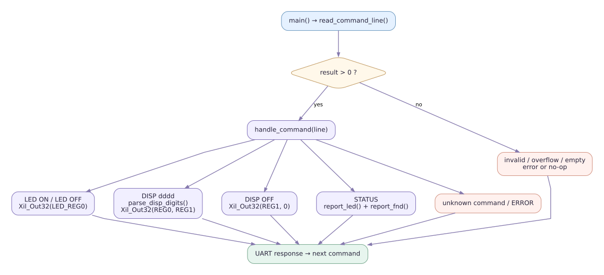

C 코드 이해
명령과 예상 UART 출력
| 입력 | 원인 → 결과 |
|---|---|
DISP 0050 | 문자 네 자리 → 0x0050 → REG0에 기록 → REG1=1 → 출력 FND 0050 |
DISP OFF | REG1=0, REG0은 유지 → 모든 AN 비활성 |
LED ON | 기존 P2-01 REG0 bit0=1 → LED0 ON |
STATUS | 기존 LED와 신규 FND 레지스터 읽기, 쓰기 없음 |
C 코드 이해
특수 자료형·함수·문법
| 표현 | 의미 | 이 코드에서의 실제 역할 |
|---|---|---|
u8 | AMD/Xilinx 8비트 부호 없는 정수 (uint8_t와 대응) | UART 한 바이트 수신, 문자를 한 바이트 송신 |
u32 | AMD/Xilinx 32비트 부호 없는 정수 | AXI 32비트 레지스터값·BCD 계산 |
Xil_In32(addr) | 메모리 주소에 매핑된 32비트 I/O 읽기 | LED/FND 레지스터의 설정값을 가져옴 |
Xil_Out32(addr,value) | 32비트 MMIO 쓰기 | REG0의 BCD 값, REG1의 enable 기록 |
XUartLite_RecvByte | UART Lite에서 1바이트를 대기 수신 | Enter까지 ASCII 문자를 조립 |
XUartLite_SendByte | UART Lite로 1바이트 송신 | 상태 메시지를 문자 단위로 PC에 표시 |
XPAR_...BASEADDR | Vitis BSP가 하드웨어에서 생성한 매크로 | 실제 UART·AXI 주소 확인의 근거 |
#define / #error | 컴파일 전 상수 정의 / 의도적인 오류 중단 | 주소 미설정·중복일 때 잘못된 접근 예방 |
strlen / memcmp / strcmp | 문자열 길이·앞부분·완전 일치 비교 | DISP dddd 및 기존 명령 엄격 검사 |
'\0' / '\r' / '\n' | C 문자열 종료 / CR / LF | 명령을 Enter 단위로 안전하게 처리 |
0x50U / & / << | 16진수+unsigned / 비트마스크 / 비트 이동 | 각 자리 4비트 BCD 결합 및 검사 |
C 코드 이해
함수별 실행 흐름

| 함수 | 동작 |
|---|---|
main() | 명령 버퍼 생성, 초기 상태 출력, 반복 수신 |
read_command_line() | CR/LF까지 입력하며 길이·제어문자를 검사 |
handle_command() | LED·FND·STATUS와 그 외 문자열 구분 |
parse_disp_digits() | 정확히 4개의 0~9 숫자를 4니블 BCD로 결합 |
report_fnd() | FND REG0/REG1을 읽고 4자리로 해석해 출력 |
C 코드 이해
DISP 0050 실제 값 추적
- 문자 수신
D I S P [공백] 0 0 5 0총 9문자가line[0..8]에 저장되고, 종료문자'\0'가line[9]에 들어갑니다. - 문자열 검증
strlen(line)==9,memcmp(line,"DISP ",5)==0, 5~8번째 위치가 모두 십진 숫자인지 검사합니다. - BCD 조립
초기값
0x0000에서 각 숫자마다 4비트 왼쪽 이동 → 0, 0, 5, 0을 순서대로 결합하여0x0050이 됩니다. - AXI 쓰기
Xil_Out32(FND_IP_BASEADDR+0x00,0x0050), 이후Xil_Out32(FND_IP_BASEADDR+0x04,1). - RTL FND 표시
다음 스캔 프레임에서
an[3]→0,an[2]→0,an[1]→5,an[0]→0 순으로 각 자리 구간을 반복합니다. - 결과 읽기
CPU가 REG0/REG1의 요청된 설정값을 읽어
OK DISP=0050 ...을 출력합니다. 물리적 FND 파형이 관찰되었다는 뜻은 아닙니다.
C 코드 이해
오류 경계·오해 방지
| 입력/조건 | 처리 |
|---|---|
DISP 50 | 4자리가 아니므로 거절 |
DISP 00A0 | 십진 숫자가 아니므로 거절 |
disp 0050 | 대소문자 불일치로 거절 |
| 32자 이상 | 명령 입력을 폐기하고 Enter까지 동기화 |
| NUL 제어문자 | 명령 전체를 거절하고 이전 상태 유지 |
USER_IP_BASEADDR/FND_IP_BASEADDR 미설정 | 컴파일 #error; 실제 주소 입력 전 빌드 금지 |
STATUS DISP=0050 출력 | 레지스터 설정 확인. 실물 4자리 확인과 별개 |
DISP OFF | REG0 숫자는 그대로, REG1 bit0만 0으로 전환 |
C 코드 이해
main_p2_02.c 전체 실행 소스
아래는 배포한 sw/main_p2_02.c와 동일한 전체 코드입니다.
/* P2-02: UART string commands -> P2-01 LED IP + P2-02 FND IP. */
#include "xparameters.h" /* Actual address constants from Vitis BSP */
#include "xil_types.h" /* u8 and u32 fixed-width Xilinx types */
#include "xil_io.h" /* Xil_In32 / Xil_Out32: memory-mapped I/O */
#include "xuartlite_l.h" /* XUartLite_RecvByte / SendByte */
#include <string.h> /* strcmp, memcmp, strlen */
/* Fill from CURRENT Address Editor/BSP; never guess physical addresses. */
#ifndef USER_IP_BASEADDR
#define USER_IP_BASEADDR 0xFFFFFFFFU
#endif
#ifndef FND_IP_BASEADDR
#define FND_IP_BASEADDR 0xFFFFFFFFU
#endif
#if USER_IP_BASEADDR == 0xFFFFFFFFU
#error "Set USER_IP_BASEADDR to the P2-01 AXI LED Base Address"
#endif
#if FND_IP_BASEADDR == 0xFFFFFFFFU
#error "Set FND_IP_BASEADDR to the P2-02 AXI FND Base Address"
#endif
#if USER_IP_BASEADDR == FND_IP_BASEADDR
#error "AXI LED and AXI FND Base Addresses must be different"
#endif
#define LED_REG0 0x00U /* P2-01 LED bit0 */
#define FND_VALUE_REG 0x00U /* P2-02 four packed BCD digits */
#define FND_CTRL_REG 0x04U /* P2-02 bit0: display enable */
#define LINE_CAPACITY 32U /* at most 31 ASCII characters + NUL */
#if defined(XPAR_XUARTLITE_0_BASEADDR)
#define UART_BASEADDR XPAR_XUARTLITE_0_BASEADDR
#elif defined(XPAR_UARTLITE_0_BASEADDR)
#define UART_BASEADDR XPAR_UARTLITE_0_BASEADDR
#elif defined(XPAR_AXI_UARTLITE_0_BASEADDR)
#define UART_BASEADDR XPAR_AXI_UARTLITE_0_BASEADDR
#else
#error "Find the UART Lite BASEADDR macro in generated xparameters.h"
#endif
/* Send a NUL-terminated string through the existing UART Lite. */
static void uart_puts(const char *text)
{
while (*text != '\0') {
XUartLite_SendByte(UART_BASEADDR, (u8)*text);
text++;
}
}
/* Print a 32-bit unsigned value as exactly eight hex digits. */
static void uart_hex32(u32 value)
{
const char digits[] = "0123456789ABCDEF";
int shift;
for (shift = 28; shift >= 0; shift -= 4) {
u8 nibble = (u8)((value >> shift) & 0x0FU);
XUartLite_SendByte(UART_BASEADDR, (u8)digits[nibble]);
}
}
/* Low four BCD nibbles map to digits from left to right. */
static void uart_bcd4(u32 packed)
{
int shift;
for (shift = 12; shift >= 0; shift -= 4) {
u8 digit = (u8)((packed >> shift) & 0x0FU);
XUartLite_SendByte(UART_BASEADDR,
(u8)((digit <= 9U) ? ('0' + digit) : '?'));
}
}
static void report_led(const char *prefix)
{
u32 value = Xil_In32(USER_IP_BASEADDR + LED_REG0);
uart_puts(prefix);
uart_puts((value & 1U) ? "LED=ON REG0=0x" : "LED=OFF REG0=0x");
uart_hex32(value);
uart_puts("\r\n");
}
static void report_fnd(const char *prefix)
{
u32 digits = Xil_In32(FND_IP_BASEADDR + FND_VALUE_REG);
u32 ctrl = Xil_In32(FND_IP_BASEADDR + FND_CTRL_REG);
uart_puts(prefix);
uart_puts((ctrl & 1U) ? "DISP=" : "DISP=OFF VALUE=");
uart_bcd4(digits);
uart_puts(" REG0=0x");
uart_hex32(digits);
uart_puts(" REG1=0x");
uart_hex32(ctrl);
uart_puts("\r\n");
}
/* 1=valid line; 0=empty; -1=overflow; -2=nonprintable ASCII. */
static int read_command_line(char *line, u32 capacity)
{
u32 used = 0U;
int overflow = 0;
int invalid = 0;
while (1) {
u8 ch = XUartLite_RecvByte(UART_BASEADDR);
if (ch == (u8)'\r' || ch == (u8)'\n') {
line[used] = '\0';
if (overflow) return -1;
if (invalid) return -2;
return used ? 1 : 0;
}
if (ch < (u8)0x20U || ch > (u8)0x7EU) {
invalid = 1;
continue;
}
if (used < capacity - 1U) {
line[used++] = (char)ch;
} else {
overflow = 1;
}
}
}
/* Require exactly 4 decimal digits: "DISP 0050" -> 0x0050. */
static int parse_disp_digits(const char *line, u32 *packed)
{
u32 bcd = 0U;
int i;
if (strlen(line) != 9U || memcmp(line, "DISP ", 5U) != 0)
return 0;
for (i = 5; i < 9; ++i) {
if (line[i] < '0' || line[i] > '9') return 0;
bcd = (bcd << 4) | (u32)(line[i] - '0');
}
*packed = bcd;
return 1;
}
static void handle_command(const char *line)
{
u32 packed = 0U;
if (strcmp(line, "LED ON") == 0) {
Xil_Out32(USER_IP_BASEADDR + LED_REG0, 1U);
report_led("OK ");
} else if (strcmp(line, "LED OFF") == 0) {
Xil_Out32(USER_IP_BASEADDR + LED_REG0, 0U);
report_led("OK ");
} else if (strcmp(line, "STATUS") == 0) {
report_led("STATUS ");
report_fnd("STATUS ");
} else if (strcmp(line, "DISP OFF") == 0) {
Xil_Out32(FND_IP_BASEADDR + FND_CTRL_REG, 0U);
report_fnd("OK ");
} else if (parse_disp_digits(line, &packed)) {
Xil_Out32(FND_IP_BASEADDR + FND_VALUE_REG, packed);
Xil_Out32(FND_IP_BASEADDR + FND_CTRL_REG, 1U);
report_fnd("OK ");
} else {
uart_puts("ERROR: LED ON / LED OFF / DISP dddd / DISP OFF / STATUS\r\n");
}
}
int main(void)
{
char line[LINE_CAPACITY];
int result;
uart_puts("\r\nP2-02 AXI FND CONTROL\r\n");
uart_puts("Commands: LED ON | LED OFF | DISP 1234 | DISP 0050 | DISP OFF | STATUS\r\n");
report_led("STATUS ");
report_fnd("STATUS ");
while (1) {
result = read_command_line(line, LINE_CAPACITY);
if (result > 0) {
handle_command(line);
} else if (result == -2) {
uart_puts("ERROR: invalid character\r\n");
} else if (result < 0) {
uart_puts("ERROR: command too long (max 31)\r\n");
}
/* Empty CR/LF lines are ignored (also handles CRLF terminals). */
}
}